【2024郑州工博会】观众邀约持续，户外广告陆续上线，全力以赴为展会造势！
首页 / 【2024郑州工博会】观众邀约持续，户外广告陆续上线，全力以赴为展会造势！
2024郑州工博会
2024郑州工博会观众邀约工作正在进行中，走访产业集聚地、产业园区、市场，对当地机械制造、不锈钢、钢材加工等行业的观众一对一邀请，面对面交流，深入产业一线，沟通下游用户企业，调研真实反馈诉求。
观众邀约
近日，观众组织团队走访郑州庞大不锈钢市场、洛阳五洲国际城、荥阳五洲城、新乡、洛阳、鹤壁、平顶山、南阳等多地的钢材市场，派发展会资料，不断拜访下游用户行业并进行观众邀约，充分保障展会观众的质量及人气。目前在世合铝型材园、庞大不锈钢市场广告、新紫金钢铁园、明佳钢铁园的广告也已陆续上线。
邀约见证
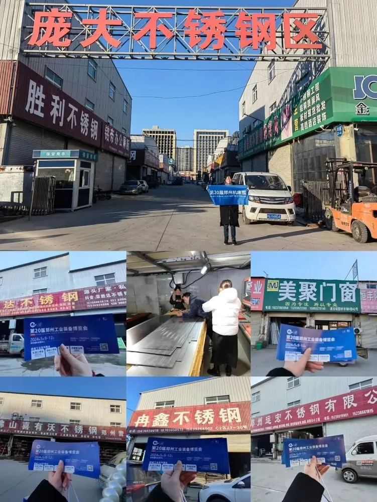
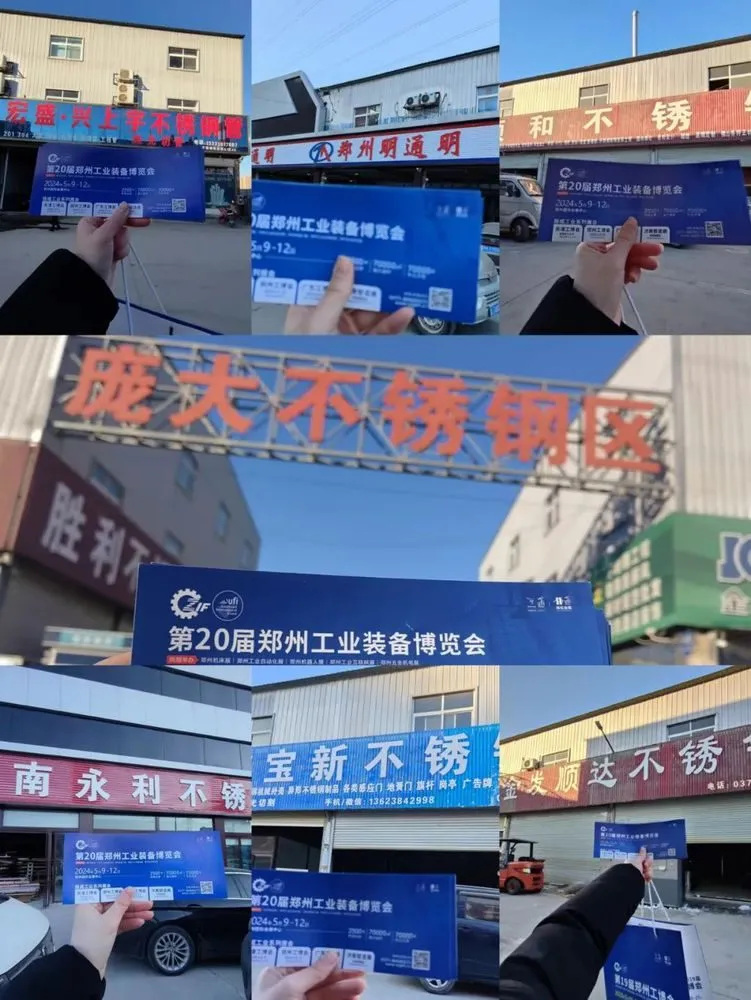
广告见证
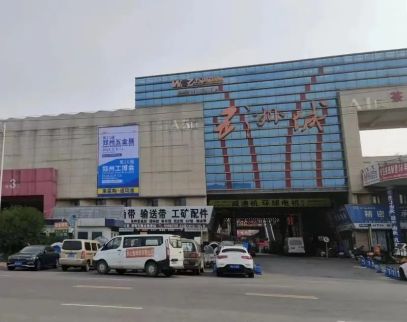
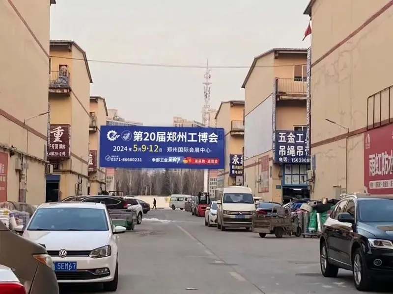
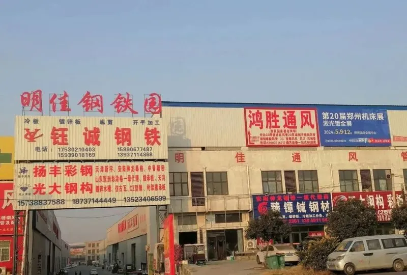
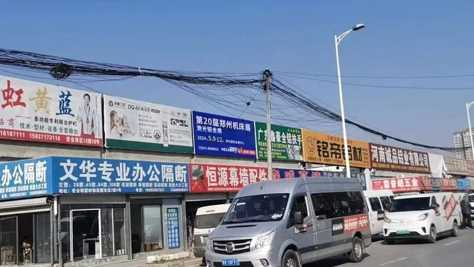
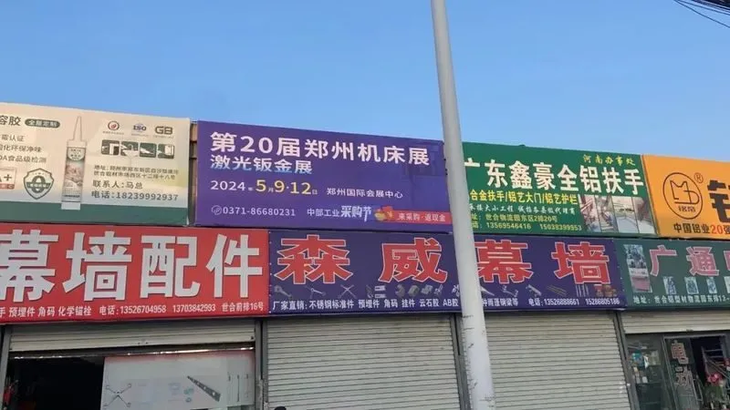
另外在金属周刊杂志上刊登郑州工博会相关信息，同时对河南各大钢材市场派发。
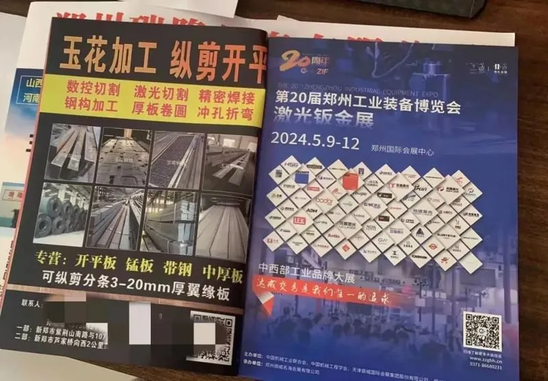
河南省内及省外高速服务区广告
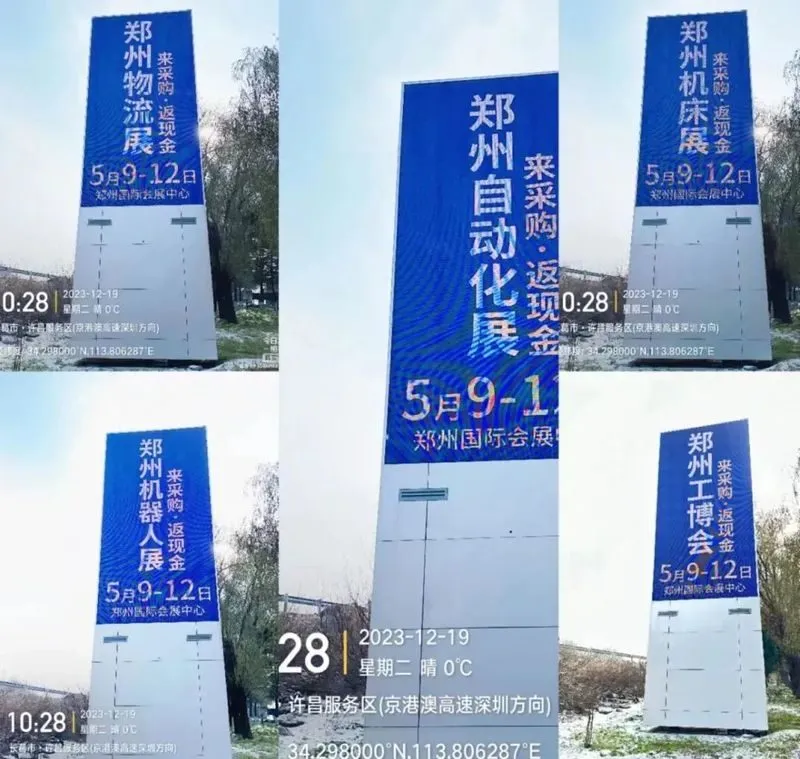
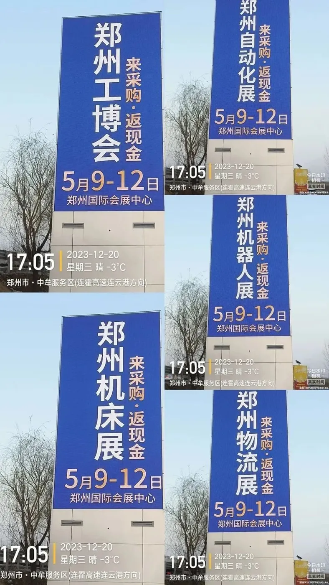
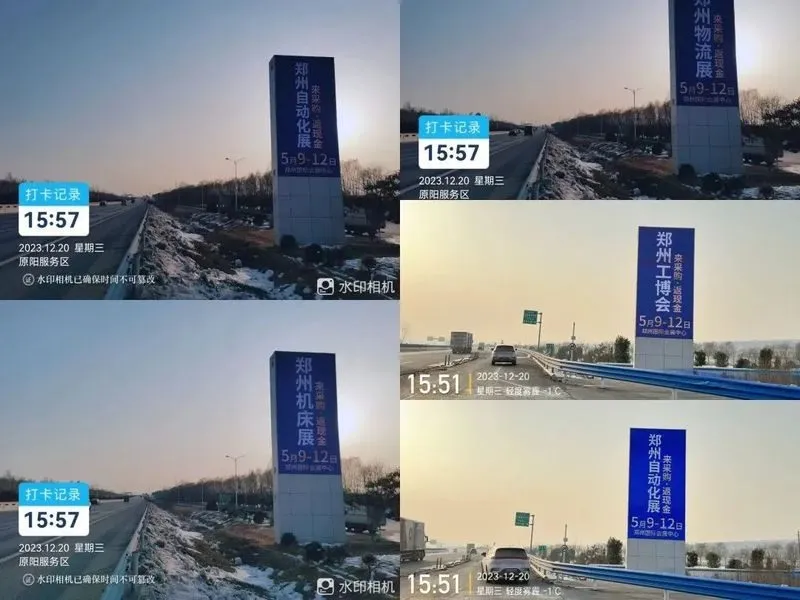
接下来的时间，观众邀约团队将继续出发，持续深入了解行业需求趋势，邀请专业观众，加深核心买家与参展商之间的联系，为明年五月展会做好充分保障！
锁定黄金五月，抢占中部市场！